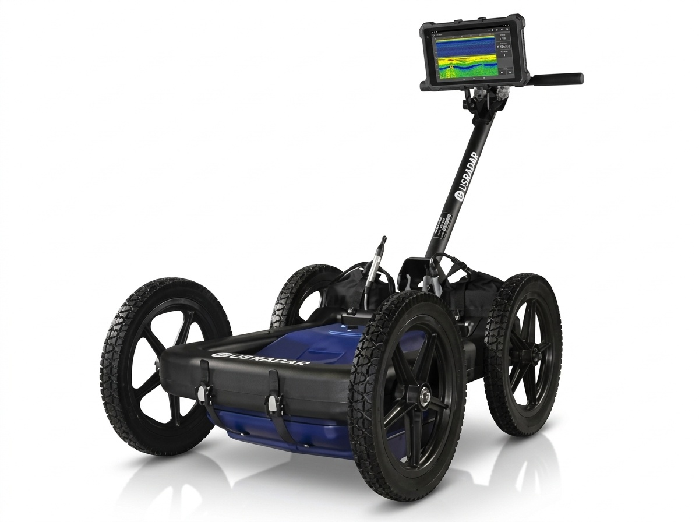
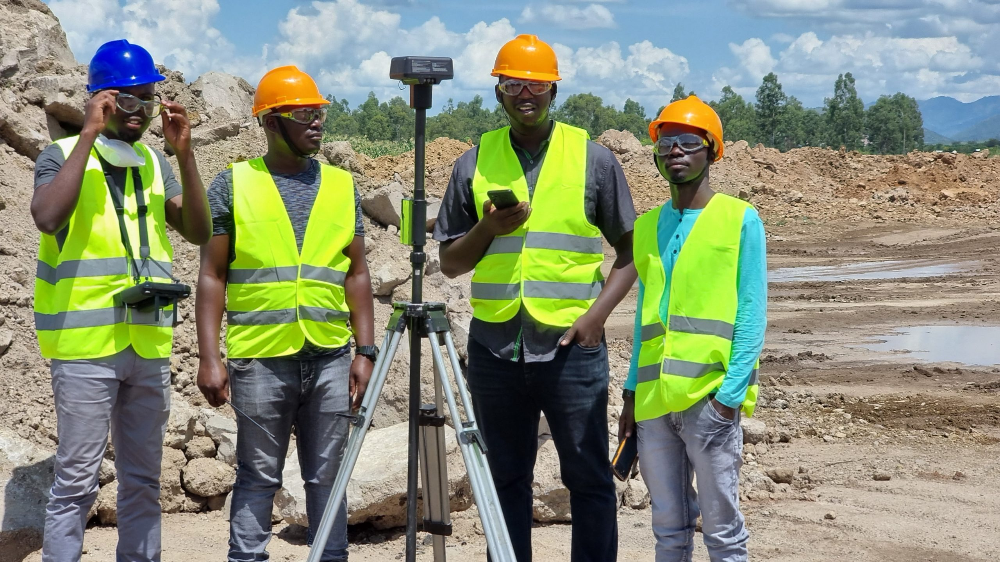
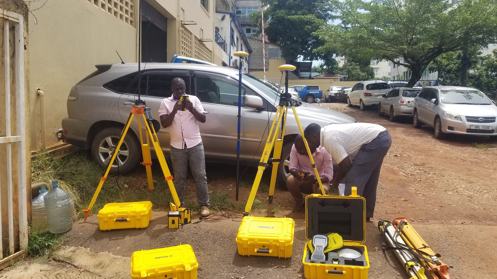
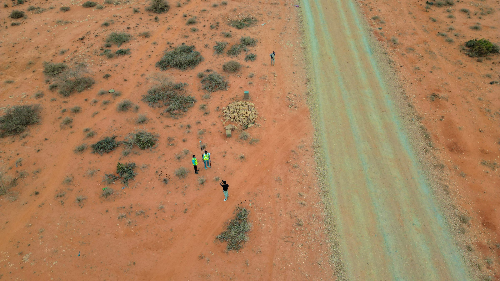
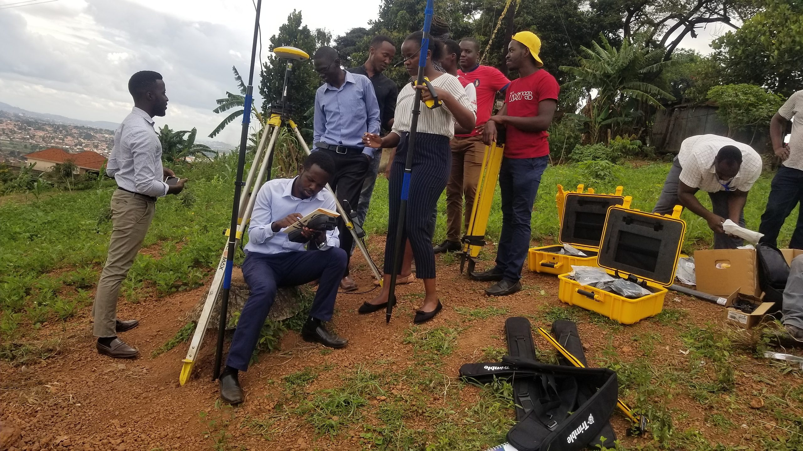

Triple frequency
Quantum Imager: three signals, one clear picture
Simultaneous 250, 500 and 1000 MHz signals, GPS mapping and real-time 3D depth slicing on a rugged all-terrain cart.
Learn more TrimbleGNSS · Total Stations · Scanning
TrimbleGNSS · Total Stations · Scanning DJI EnterpriseDrones · LiDAR · Dock
DJI EnterpriseDrones · LiDAR · Dock Esri ArcGISGIS & SDI
Esri ArcGISGIS & SDI Spectra GeospatialGNSS & Robotic Stations
Spectra GeospatialGNSS & Robotic Stations Nikon PrecisionOptical Survey
Nikon PrecisionOptical Survey US RadarGround Penetrating Radar
US RadarGround Penetrating Radar Seafloor SystemsHydrographic Survey
Seafloor SystemsHydrographic Survey IBM Tape StorageEnterprise Data Archive
IBM Tape StorageEnterprise Data Archive XGRIDSHandheld SLAM LiDAR
XGRIDSHandheld SLAM LiDAR



Simultaneous 250, 500 and 1000 MHz signals, GPS mapping and real-time 3D depth slicing on a rugged all-terrain cart.
Learn moreOfficial videos from US Radar.
What ground penetrating radar can tell you.

Find metallic and non-metallic pipes, cables and ducts before you dig.
Learn more
Locate rebar, voids and defects in concrete without breaking it.
Learn more
Map soil, bedrock and groundwater conditions for site investigation.
Learn moreGround penetrating radar and software, supplied and supported by KACO Systems.
From triple-frequency imaging to geophysical scanning
The first true triple-frequency GPR
Utility mapping with GPS
Modular radar for deep investigations
Acquire, view and process GPR data
All-in-one viewing and processing suite

Drives every US Radar system
Learn how to collect and interpret GPR data with US Radar training resources.
Learn moreReal projects where US Radar systems found what lay below.
Learn moreManuals, software downloads and help from the US Radar team.
Learn more
Hands-on data acquisition and depth-slice interpretation with our trainers.
Learn moreA utility strike is expensive and dangerous. We back every US Radar system with certified support, application guidance, and operator training for Uganda’s civil and utility sector.
Locate metallic and non-metallic pipes, cables, and ducts before breaking ground, reducing costly redesigns and unplanned excavation delays on active sites.
Non-destructive scanning ahead of piling, trenching, and directional drilling protects crews and existing infrastructure from accidental utility strikes.
Hands-on training in radar data acquisition, depth-slice interpretation, and Radar Studio post-processing for your own site engineers and survey crews.
Our application engineers help you scope the right US Radar system for your soil conditions and project depth requirements, with an on-site demonstration where useful.